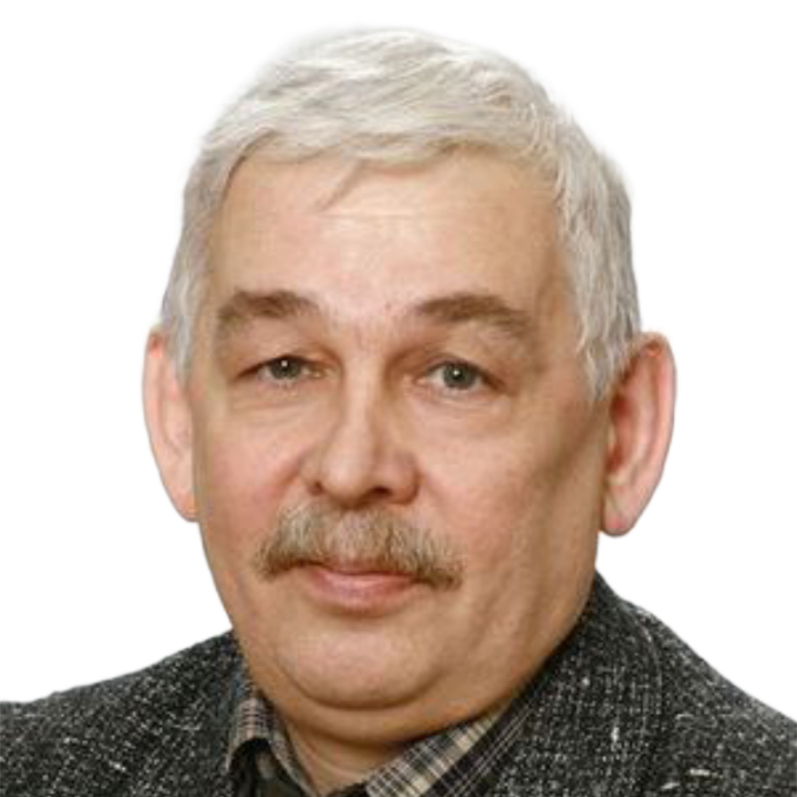
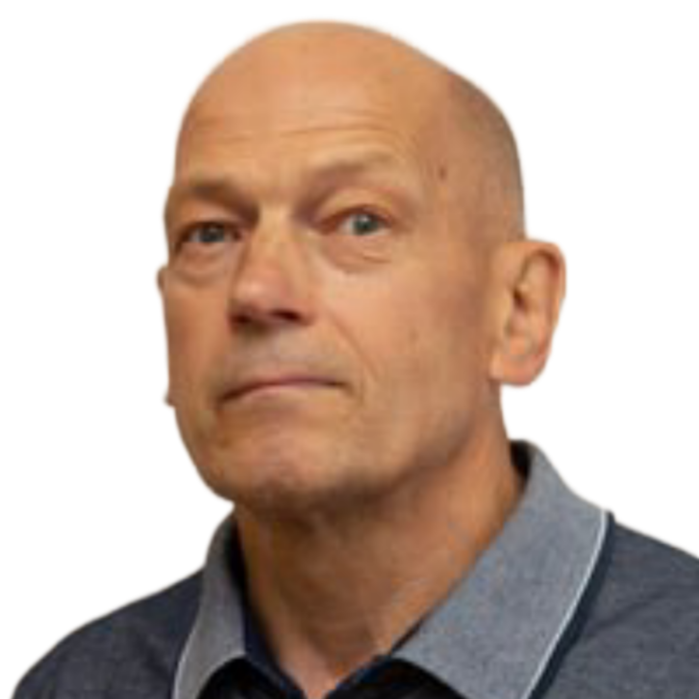
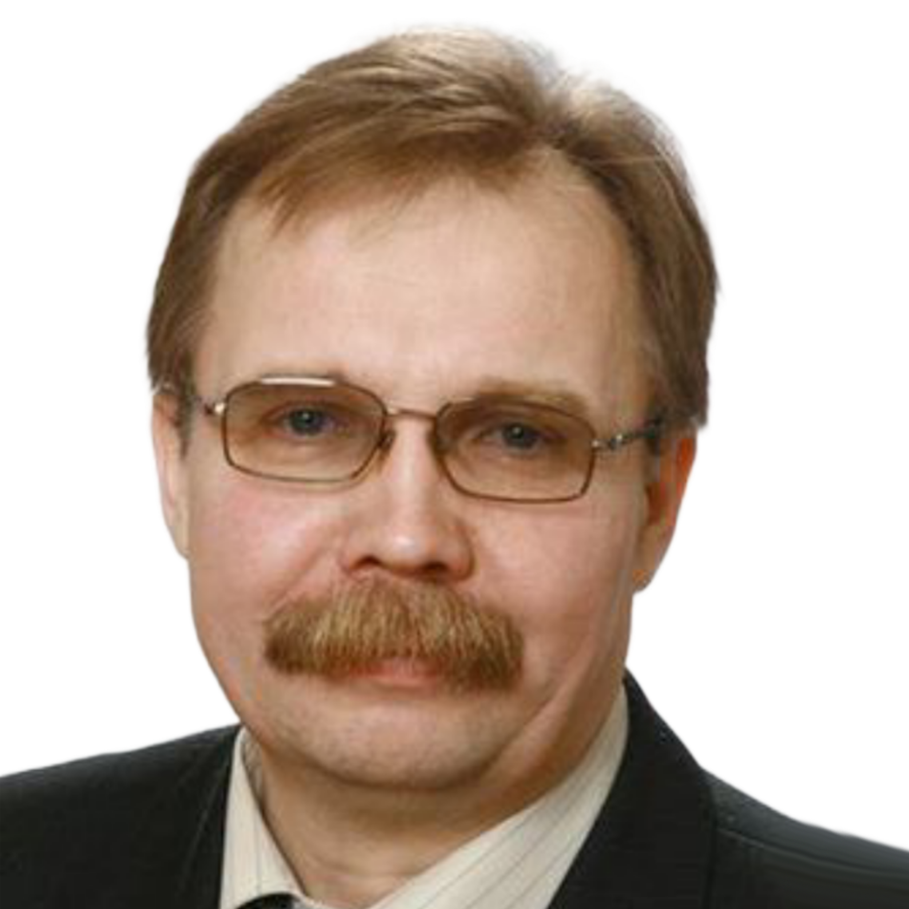
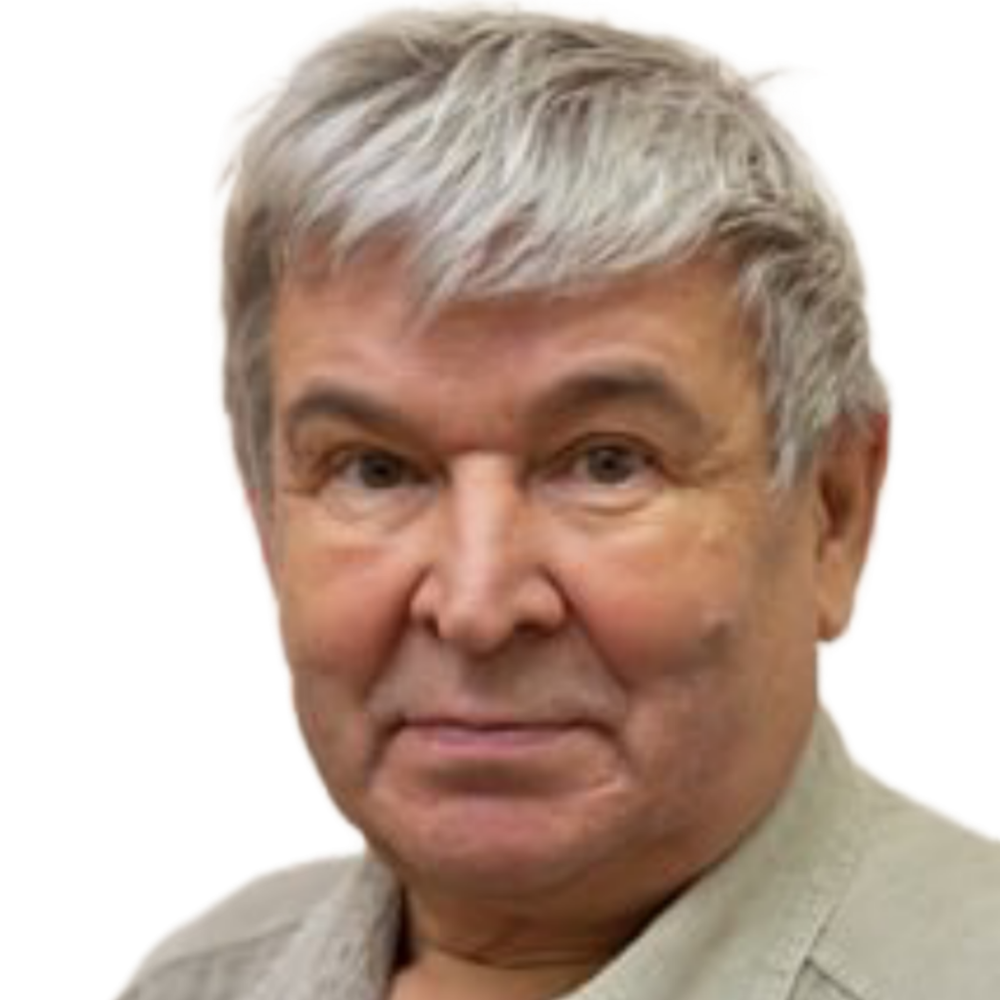
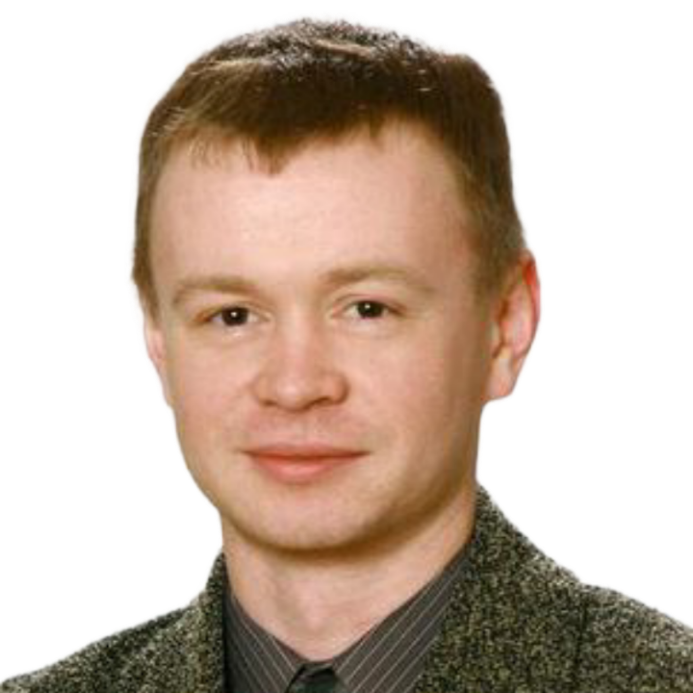
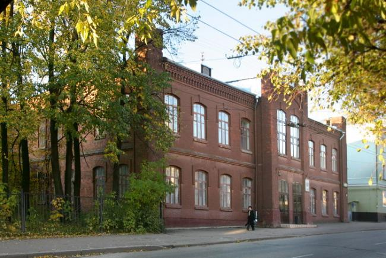

Сайт кафедры ЭПиАПУ!!!!!!!!!!
Сайт кафедры ЭПиАПУ!!!!!!!!!!Кафедра электропривода и автоматизации промышленных установок ВятГУ, единственная подобного профиля на Северо-Востоке Европейской части России, образована в 1972 году.
Кафедра располагает уникальным оборудованием для качественной учебной, методической и научной работы; более 90% преподавателей имеют ученые степени и звания.
Кафедра готовит инженеров по специальности «Электропривод и автоматика промышленных установок и технологических комплексов» и бакалавров по профилям: "Приводы робототехнических и мехатронных систем", "Электропривод и автоматика"
Традиционная специальность «Электропривод и автоматика промышленных установок и технологических комплексов» для ведущих технических вузов России, устойчивый спрос на которую является неизменным.
Уже в названии специальности видна ее системность и универсальность. Электропривод - это силовая часть любой управляемой системы, состоящая из преобразователя электрической энергии, электродвигателя и рабочего механизма. Поэтому студент должен знать энергетику, электромеханику и силовую электронику.
Автоматизация позволяет «умному» механизму принять решение вместо человека. Автоматизированная система управления включает управляющую и информационную части. Управляющая часть вырабатывает сигналы на электропривод на основе информации о требованиях к процессу и его текущем состоянии. Она реализуется либо программно, либо аппаратно. Информационная часть состоит из датчиков и преобразователей информации и контролирует течение процесса и состояние окружающей среды. Поэтому студент должен знать современную элементную базу, вычислительную технику и программирование, теорию и практику управления. Что касается востребованности и перспективности специальности, то сегодня в мире уже эксплуатируется более 14 миллиардов систем управления с электроприводом, что почти в 3 раза больше, чем население Земли. Поэтому с трудоустройством инженеров по электроприводу и автоматизации нет проблем.
Уникальное сочетание классических электротехнических дисциплин с самыми современными курсами по электромеханическим и управляемым системам, программированию, робототехнике, вычислительной и преобразовательной технике обеспечивает высокий уровень подготовки студентов как в области электропривода и автоматизации, так и в применении вычислительной техники. Условиями рыночной экономики продиктовано включение в учебный план таких дисциплин, как экономика малого предпринимательства, квалиметрия, маркетинг и менеджмент в электротехнике, деловое общение на иностранном языке и других.
Выпускники кафедры успешно работают в качестве:
• главных специалистов на предприятиях различных форм собственности в промышленности, транспорте, связи
• разработчиков автоматизированных систем управления технологическими процессами и робототехническими комплексами и гибкими автоматизированными системами
• лицензированных специалистов по наладке и эксплуатации электротехнического оборудования и вычислительной техники
• преподавателей в вузах и колледжах
Кафедра готовит инженеров по специальности «Электропривод и автоматика промышленных установок и технологических комплексов» со специализациями «Электропривод и автоматизация общепромышленных установок и технологических комплексов» и «Электропривод и автоматизация робототехнических и гибких производственных комплексов» и бакалавров по профилям: "Приводы робототехнических и мехатронных систем", "Электропривод и автоматика"
При кафедре открыт и успешно функционирует "Центр робототехники и мехатроники ВятГУ".
Ниже представлено видео с канала Сергей Мокрушин (RoboKirov) про кафедру ЭПиАПУ *ТЫК*):
Легенды ЭПиАПУ (в алфавитном порядке):
Грудинин Виктор
Лалетин Вениамин
Охапкин Сергей
Сбоев Виктор
Сластихин Николай
 Шураков Иван
Шураков Иван Юдин Сергей
Юдин СергейКорпус кафедры ЭПиАПУ на ул. Преображенская (Энгельса), д.32:
